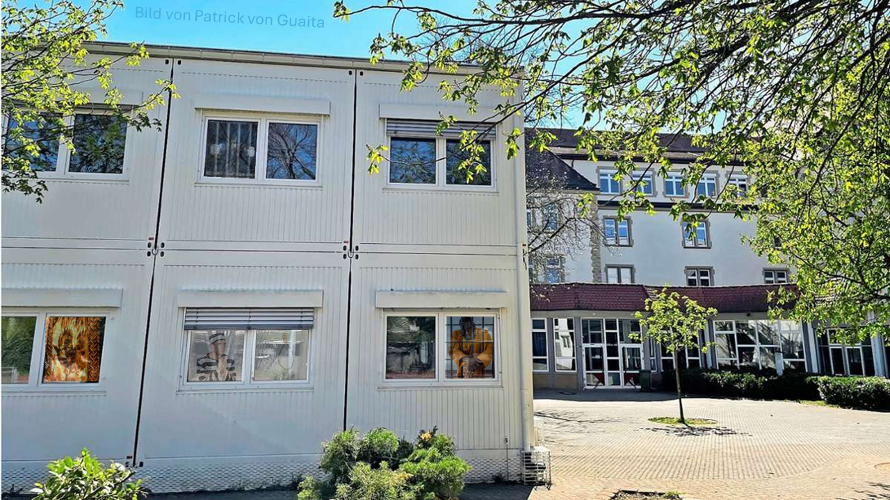

Diesen Dezember sollen die großen weißen Container endlich abgebaut werden. Seit sechs Jahren stehen sie auf unserem Pausenhof; fünf Jahre lang nutzte sie die Realschule, erst seit einem Jahr gehören sie unserem Gymnasium. Trotz ihres eher provisorischen Charmes waren die Container im Sommer sehr beliebt, denn sie waren als einzige Räume mit einer Klimaanlage ausgestattet. Im Winter sorgte ein Heizlüfter dafür, dass es darin immer angenehm warm war.
Nach dem Abbau der Container werden einige Klassen ihren Unterricht in den GKS, den Gewerblichen und Kaufmännischen Schulen – auch bekannt als „Schoki-Bunker“ – verbringen. Ob die Klassen dauerhaft dorthin umziehen oder ob nur einzelne Stunden dort stattfinden, ist noch unklar. Auch wenn der Weg nicht weit ist, kann es in einer fünfminütigen Pause durchaus stressig werden, rechtzeitig den Raum zu wechseln.
Dafür gewinnen wir nach dem Abbau wieder mehr Platz auf dem Pausenhof zurück – etwas, worauf sich viele sicherlich freuen.
Autor: Emilia Drilling
